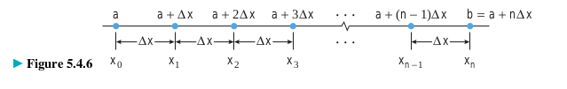

Our main goal in this section is to use the rectangle method to give a precise mathematical definition of the “area under a curve.”
Дефиниција на површина како лимес, Сигма нотација
Ознака за изразување на суми со поголем број на собироци во компактен облик (се користи големата грчка буква `sum` - сигма).
`sum_(k=m)^n f(k)`
m и n се нарекуваат долна и горна граница на сумирањето, а буквата k сe нарекува индекс на сумирањето.
Пример:
`sum_(k=4)^8 k^3 = 4^3 + 5^3 + 6^3 + 7^3 + 8^3`
`sum_(k=1)^5 2k = 2*1 + 2*2 + 2*3 + 2*4 + 2*5`
`sum_(k=0)^5 (2k+1) = (2*0+1) + (2*1+1) + (2*2+1) + (2*3+1) + (2*4+1) + (2*5+1)`
Една сума може да биде запишана на повеќе начини со користење на сигма нотација со различни граници на сумирање и соодветно различни собироци. На пример,
`sum_(i=1)^5 2i = 2+4+6+8+10 =sum_(j=0)^4 (2j + 2)= sum_(k=3)^7 (2k-4)`
Пример:Да се изрази `sum_(k=3)^7 5^(k-2)`во сигма нотација во која долната граница на сумата е `0` наместо `3`.
`sum_(k=3)^7 5^(k-2) = 5^1 + 5^2 + 5^3 + 5^4 + 5^5`
`= sum_(k=3)^7 5^(k-2) = 5^(3-2) + 5^(4-2) + 5^(5-2) + 5^(6-2) + 5^(7-2)`
`= sum_(j=0)^4 5^(j+1) = 5^(0+1) + 5^(1+1) + 5^(2+1) + 5^(3+1) + 5^(4+1)`
Теорема 1
- i. `sum_(k=1)^n ca_k = c sum_(k=1)^n a_k`
- ii. `sum_(k=1)^n (a_k+b_k) = sum_(k=1)^n a_k + sum_(k=1)^n b_k`
- ii. `sum_(k=1)^n (a_k-b_k) = sum_(k=1)^n a_k - sum_(k=1)^n b_k`
Теорема 2
- i. `sum_(k=1)^n k = 1+2+3+ ...+n = (n(n+1))/2`
- ii. `sum_(k=1)^n k^2 = 1^2+2^2+3^2+ ...+n^2 = (n(n+1)(2n+1))/6`
- ii. `sum_(k=1)^n k^3 = 1^3+2^3+3^3 + ... + n^3 = [(n(n+1))/2]^2`
Пример 3
Пресметај: `sum_(k=1)^30 [k(k+1)]`
Решение:
`sum_(k=1)^30 [k(k+1)] = sum_(k=1)^30 (k^2 + k)`
`= (30(30+1)(60+1))/(6) + (30(30+1))/2 = 9920`
Метод на правоаголници
Нека `R` ја означува областа ограничена од горе со кривата која е график на `y = f (x)`, од долу со `x` – оската, и од страните со вертикалните прави `x = a` и `x = b`. Ќе дадеме дефиниција на плоштината `R`, oзначена со `A(R)` на следниот начин:
Го делиме интервалот `[a, b]` на `n` подинтервали со еднаква должина, со точките `a = x_0 < x_1 < ... < x_(n-1) < x_n=b`.
Секој интервал има должина `Delta_x = (b-a)/n` `x_k = a + kDelta_x` `k = 0, 1, 2, 3, ... , n`.
Избираме произволни точки `x_1^* < x_2^* < ... < x_n^*` од секој подинтервал, т.е. `x_k^* in [x_(k-1), x_k ]`, `k = 1,2,...,n`.
Над секој подинтервал `[x_(k-1), x_k ]` цртаме правоаголник со висина f(x_k^* ), `k = 1,2,...,n.`
Фигурата составена од сите правоаголници формира област `R_n` со плоштина
`A(R_n) = f(x_1^*)Delta_x + f(x_2^*)Delta_x + f(x_n^*)Delta_x = sum_(k=1)^n f(x_k^*)`
`A(R_n)` приближно ја претставува (апроксимира) плоштината на областа `R`, односно
`A(R) ~~ = sum_(k=1)^n f(x_k^*)`
Ја дефинираме плоштината на областа `R` како
`A(R) = lim(n-> +oo) A(R_n) = lim_(n->+oo) sum_(k=1)^n f(x_k^*)`
На овој начин ја добиваме следната дефиниција за плоштина под крива.
Тврдењата од претходната теорема може да се искажат и со следниве формули
`int [f(x) + g(x)] dx = int f(x) dx + int g(x) dx`
`int [f(x) - g(x)] dx = int f(x) dx - int g(x) dx`
Внимавај!
Сепак, овие равенства мора да се применуваат внимателно за да се избегнат грешки и непотребни компликации кои произлегуваат од константите на интеграција. На пример, ако го користиме првото равенство за да интегрираме `0x` и запишеме
`int 0 dx != 0 int dx != 0 * (x + C)`
тогаш погрешно ќе ја изгубиме константата на интеграција. Точно е дека
`int 0 dx = C`
Внимавај!
Ако го користиме првото равенство за да интегрираме `2x` запишувајќи
`int 2x dx = 2 int x dx = 2(x^2/2 + C) = x^2 + 2C`
тогаш ќе имаме непотребна компликација на произволната константа.
Слично, ако го користиме второто равенство за да интегрираме `1 + x` запишувајќи
`int (1 + x) dx = int 1 dx + int x dx = x + C_1 + x^2/2+ C_2 = x + x^2/2 + C`
тогаш ќе имаме две произволни константи, а доволна е една.
Вакви видови на проблеми може да се избегнат со запишување на константата на интегрирање во крајниот резултат, во моментот кога ќе се ослободиме од последниот неопределен интеграл.
Пример 1.
Да се пресмета:
a. `int 4cosx dx`
Решение
`int 4cosx dx = 4 int cosx dx = 4sinx + C`
б. `int 4cosx dx`
Решение
`int (x+x^2) dx = int x dx + int x^2 dx = x^2/2 + x^3/3 + C`
Деловите (ii) и (iii) oд претходната теорема може да се прошират од две функции на повеќе од две функции, што во комбинација со делот (i) ја дава следната општа формула:
`int [c_1f_1(x) + c_2f_2(x) + ... + c_3f_n(x)] dx = c_1 intf_1(x) + c_2 intf_2(x) + ... + c_n int f_n(x)`
Пример 2.
Да се пресмета:
a. `int (3x^2 -4x + 5)dx`
Решение
`= 3int x^2 dx -4 int x dx + 5int dx`
`= 3x^3/3 - 4x^2/2 + 5x`
`= x^3 - 2x^2 + 5x + C`
Интегрирање со замена
Правилото за извод на сложена функција од гледиште на антидиференцирање: Нека `F` е антиизводот на `f` и нека `g` е диференцијабилна функција. Од правилото за извод на сложена функција (верижно правило) следува дека изводот на `F(g(x))` може да се изрази како
`d/dx[F(g(x))] = F'(g(x))g'(x) = f(g(x))g'(x)`
Ова може да запише во облик на интеграл како
`int f(g(x))g'(x) dx = F(g(x)) + C`
За примена ова правило корисно е да воведеме замена `u = g(x)`. Потоа, пресметуваме диференцијал на функцијата `g`, на следниот начин:
`du = g(x)'dx`
Со воведување на замената во претходниот интеграл, се добива:
`int f(g(x))g'(x) dx = int f(u) du = F(u) + C = F(g(x)) + C`
Упатство за решавање на интеграли со користење на замена
Чекор 1. Се бара композиција `f(g(x))` во интеграндот за која со замената
`u = g(x)` , `du = g'(x)du`
се добива интеграл кој што може да се изрази преку `u` и неговиот диференцијал `du`
Чекор 2. Ако успееме да го направиме чекорот 1 се обидуваме да го пресметаме добиениот интеграл по `u`
Чекор 3. Ако успееме да го направиме чекорот 2 го заменуваме `u` со `g(x)` за да крајниот резултат биде функција од `x`.
Пример.
Да се пресметат следните интеграли:
a. `int (x^2 + 1)^50 2xdx`
Решение
Ако `u = x^2 + 1` тогаш `du = 2xdx`.
a. `int (x^2 + 1)^5 2xdx = int u^50 du = u^51/51 + C`